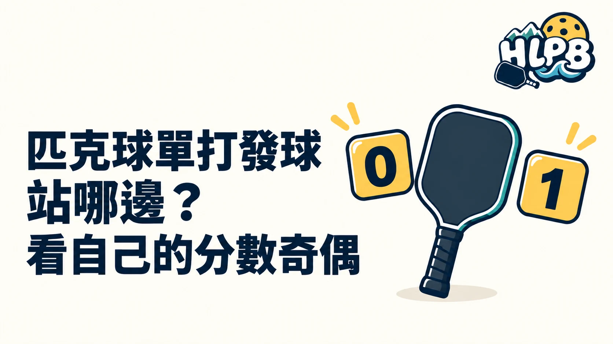

單打發球站左邊還是右邊，看發球員自己的分數奇偶。不是看對手分數，也不是把雙方分數相加後決定，更不需要記雙打的第幾位發球員。
發球區怎麼對應？
| 發球員自己的分數 | 發球位置 |
|---|---|
| 偶數，包含零分 | 右側發球區後方 |
| 奇數 | 左側發球區後方 |
這裡的左右，是發球員面向球網時的方向。發球仍須往正確斜對角發球區，站位正確不代表可以把球發到同側或非截擊區。
換到我發球，從哪裡開始？
重新看自己當下的分數，而不是沿用對手剛剛站的位置。每次取得發球權都用同一個核對方法，就不必依上一球印象猜測。
發球得分制與每球得分制要分清楚
左右對應與得分方式是不同問題。本文介紹標準單打的分數與發球區關係；實際如何得分、何時換發球與如何結束一局，仍須核對採用的計分制度，不能只靠奇偶規則推定全部流程。
練習時怎麼減少混淆？
HLPB 建議先喊出自己的分數，再確認奇偶及站位，最後核對對角落點。先讓順序穩定，再增加發球速度與角度；回合中不需要一直記住對手上一球的位置。
雙打另有兩位球員的發球輪替，應閱讀雙打計分文章，不把單打的簡化記法直接套過去。
內容更新：2026-10-20｜資料來源：USA Pickleball 官方資料；USA Pickleball 官方資料
返回文章列表